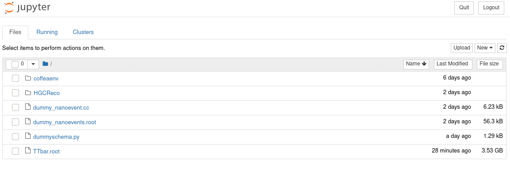
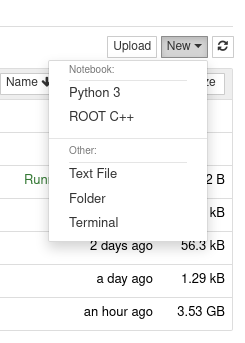
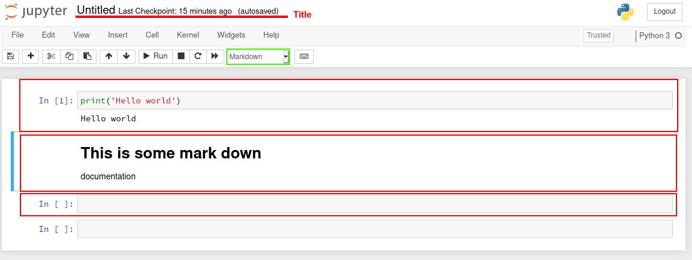

Navigating jupyter notebooks¶
The typical workflow for of coffea uses notebooks, which allows for rapid testing of code in developement, as well as having a window that is can display analysis results without needing to switch a new window. The install and setup commands already includes the command to initialize a server for notebooks. Here is mainly to help people who are unfamiliar with notebook to get started.
More information regarding starting a notebook server¶
Notebooks servers generates the interface through network protocols, which can be access via your favorite browser. If you are running the commands one your personal machine, once you run the jupy.sh script, the command line should output something like:
http://127.0.0.1:8888/?token=62bfe8d8e84fe97f8da20
This line can be placed in your browsers URL bar to access the default jupyter interface. For security reasons, jupyter servers only allows network access from local connections. If you are using an LPC machine, you will need to setup ssh tunneling to pass traffic from the network port of your local machine to the LPC machine.
ssh -L localhost:8XXX:localhost:8XXX <user>@<machine>
Or if you are using ~/.ssh/config to make connection settings persistent:
Host <machine>
user <user>
hostname <machine address>
LocalForward 8XXX <machine address>:<8XXX>
Or if you are using the a GUI based ssh connector, find the setting under the name of Connection/Tunneling or similar and set
source port: 8XXX
Destination: 127.0.0.1:8XXX
Be sure to use these connections before starting the jupyter script! If note, stop the server session with Ctl+C, disconnect out of the ssh session and start again.
Navigating a server and notebook session¶
After that you should be greeted with the Jupyter Notebook interface in your browser!

This is your typical directory tree explorer with the root directory set at where you initiated the jupyter server session. You can either click on a notebook file (extensions are typically ipynb) to open and edit an existing notebook, or click on the New button in the top right to create a new notebook.

One clicking the button, we will be greeted with the choice of **kernels**. Loosely speaking kernels referes to how the code in the notebook will be interpreted.
In our case we will be choosing the Python 3 kernel. By doing so we should be greeted with a notebook.

You can change the name of the notebook file on the top title bar. Now lets look at the main structure of notebooks: cells, highlighted with the wide red box in the image above. Cells are chunks of (python) code to be executed by the server. After completed editing a cell, run the piece of code either by hitting the Run button, or hitting Shift+Enter with our cursor in the desired code. Any output of the code should also appear below the cell block by default. A new cell will always
appear at the end of the notebook after executing the last cell in the notebook. Or you can use the insert button to create new cell anywhere within the notebook.
Cells can also be set to be a markdown cell using the drop-down menu highlighed in green, in which case the output of the cell is a HTML render of the markdown text placed in the cell. This is extremely useful for alternative between documentation and code developments. Most of the pages in this tutorial will also follow a notebook style documentation: such as below
[1]:
print("This is a demonstration code cell in the tutorial")
print("Hello world")
This is a demonstration code cell in the tutorial
Hello world
Understanding cells¶
A notebooks can be thought of a cells seperating various code statements that share a common memory pool. This means that variables can be defined in one cells:
[2]:
myvar = 'This is a test'
And be called and maipuated being sepeared by documentation or file cells
[3]:
print ('myvar is:', myvar)
myvar is: This is a test
Cells can also be exceuted out of order. We can define the statement in the following cell:
[4]:
myvar = myvar + '.'
if reexecuted the cell containing the print('myvar is:', myvar) statement, it should now show:
myvar is: This is a test
The small number to the left of the cell indicates the execution order, for the sake of reading clartiy it is usual practice to not abuse this function, but rather reserve it for code testing:
Supposing we are currently developing a complicated function:
[5]:
def my_difficult_calculation(x):
return x*10
We can isolate this complicated function in a cell and use a new cell to check the results of a function
[6]:
print(my_difficult_calculation(myvar))
This is a test.This is a test.This is a test.This is a test.This is a test.This is a test.This is a test.This is a test.This is a test.This is a test.
Now if we found a some alterations to the my_difficult_calculation function, we can simply rerun the cell containing the definition of the function, forcing the kernel to update what my_difficult_calculation means for python cells, and rerun all cells containing my_difficult_calculation
Library and imports¶
All notebook cells should have the same access to any python libraries as typical python session running in the same (virtual) environment. Any import command that would work in python should work here:
[10]:
import coffea
help(coffea.processor.ProcessorABC.process)
Help on function process in module coffea.processor.processor:
process(self, df)
Processes a single DataFrame
Returns a filled accumulator object which can be initialized via self.accumulator.identity()
Again, because memory is shared across all cells, import statements can be added to the first executed cell in the notebook, and all cell will have access to said package.
A small issue comes when using custom python packages developed specifically for some set of notebooks. If you have the directory structure like:
<WORKINGDIR>
├── coffeaenv
├── notebooks
│ ├── mynotebook1.ipynb
│ └── mynotebook2.ipynb
├── utils
│ ├── utils1.py
│ ├── utils2.py
│ └── utils3.py
└── ...
You may find that the usual import statement in mynotebook1.ipynb such as below
import utils.utils1
might fail, with the system complaining that utils is not found. This is an issue for what the “current working directory” (cwd) is for a specific notebook as straighforwards as executing a python script in a command line. Depending on how the notebook is initialized, the cwd can be <WORKINGDIR>, <WORKINGDIR>/notebooks or neither of the above.
The what to compensate for this is specific to how your intend to setup your environment, so there is so global solution. The typical solution is before starting the jupyter session, setup the environment variable PYTHONPATH to ensure the package path is included. In the case above, we can run:
export PYTHONPATH=${PYTHONPATH}:<full/path/of/WORKINGDIR>
If you have been using the ./init.sh script included in the default setup commands, this variable should already be setup as such, so you can place python packages directly within your working directory, and the typical import commands should work as expected.